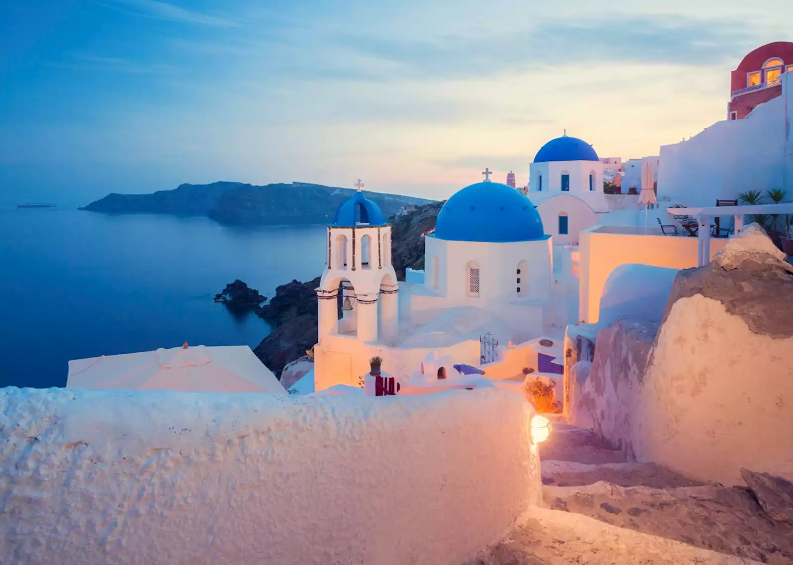
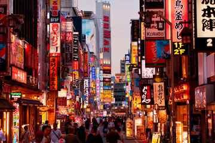
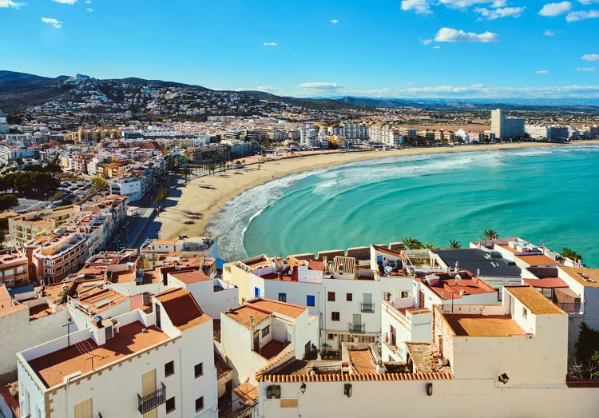

Santorini, Greece  Evening view of Fira, Santorini (Audley Travel, 2024) Santorini is one of the most breathtaking places in the world. We have both seen the famous whitewashed buildings overlooking the sea, and have always wanted to experience visiting them. Santorini, Greece is rich in history and culture with Fira & Oia being on our bucket list to walk through; experiencing charming streets, local markets, and traditional Greek architecture.
Tokyo, Japan  Downtown Tokyo (Adobe Stock, n.d.) Tokyo is a city with ultramodern technology, and as our passion for technology, we are very interested in visiting Japan, specifically Tokyo. The seasonal beauty Tokyo has is incomparable with any other city. Tokyo changes dramatically with the seasons; spring for breathtaking cherry blossoms, summer for lively festivals, autumn for stunning foliage, and winter for holiday illuminations.
Rome, Italy St. Peter's Basilica (Auvil, 2017) Rome is a place where history, art, and culture blend seamlessly with modern life. Rome is one of the most iconic travel destinations in the world that offers breathtaking landmarks, rich traditions, and incredible food. Rome is more than just a historical city; it's a place where the past and present coexist in a way that no other place can offer. The passion for soccer runs deep in Rome, making it a dream destination for any soccer fan.
Cape Town, South Africa Bo-Kaap neighborhood (Zicasso, 2023) Cape Town is a melting pot of culture, and its cuisines and breathtaking activities are what stood out to us. The beaches, food, and diversity are what we want to experience because Cape Town is an award-winning food and wine city. The diversity makes it beautiful, and learning about different cultures and diverse groups is something that interests both of us as we both also come from different backgrounds.
Madrid, Spain  Beach near Madrid (TripSavvy, 2019) Madrid is the central capital of Spain known for its rich history, passionate soccer culture, and lively nightlife. Real Madrid is the most successful soccer team in the world and we have always been their supporters. As we are both in our early 20s, we want to experience the Madrid nightlife that everyone talks about. The food and culinary scenes in Madrid are immaculate, and we have both dreamed of trying the traditional Tapas as it's one of the richest and oldest culinary traditions.
Which of our top 5 destinations would you visit first? Destination preferences Santorini, Greece Tokyo, Japan Rome, Italy Cape Town, South Africa Madrid, Spain Please leave any comments you think will be valuable to us: Clear all form fields
References 12 Best Places to Visit in Greece. (2024, October 2). Audley Travel. Read more Tokyo Images – Browse 852,066 stock photos, vectors, and video. (n.d.). Adobe Stock. Read more Auvil, J. P. (2017, April 4). Rome's Top 10 attractions : Rome : Read more Editorial Team. (2023b, May 29). Top 10 things to do in Cape Town. Zicasso Read more Corrigan, D. (2019, June 3). How to Get to the Beach from Madrid. TripSavvy. Read more